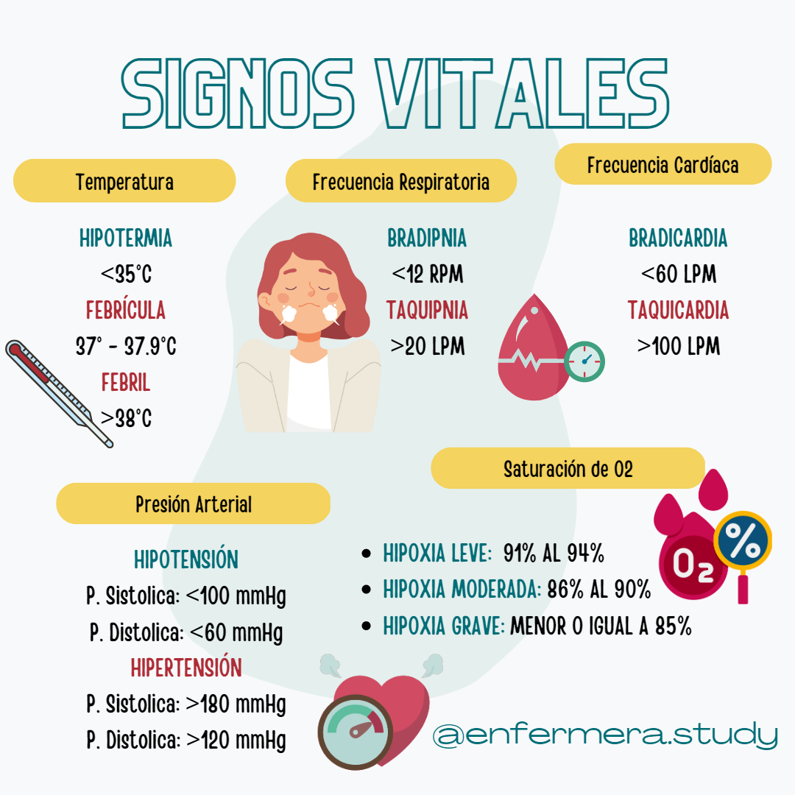

¡Conoce la Importancia de tus Signos Vitales!
Tomarte los signos vitales regularmente ayuda a detectar posibles problemas médicos antes de que se vuelvan graves.
La presión arterial, el ritmo cardíaco y la temperatura son indicadores clave de tu bienestar.
En SURATECH creemos que la prevención es la mejor medicina. Registrar tus signos vitales es clave para cuidar de ti.
El monitoreo constante permite a los médicos personalizar tratamientos. ¡Toma el control de tu salud!
Detalles Adicionales
Los signos vitales son medidas que reflejan el funcionamiento de las funciones más
básicas
del cuerpo, como el ritmo cardíaco, la frecuencia respiratoria, la temperatura y la
presión
arterial.
El monitoreo de signos vitales permite detectar tempranamente problemas de salud,
prevenir
complicaciones en enfermedades crónicas y ajustar tratamientos de forma personalizada.
Mejora la atención médica al brindar datos en tiempo real para decisiones rápidas, y,
con
dispositivos portátiles, facilita la monitorización remota, reduciendo
hospitalizaciones. Es
crucial para deportistas en la optimización de entrenamientos y para personas mayores o
crónicas, brindando tranquilidad y seguridad mediante alertas en emergencias. Además,
apoya
la salud pública al identificar tendencias en brotes epidémicos, controlando la
propagación
de enfermedades.
